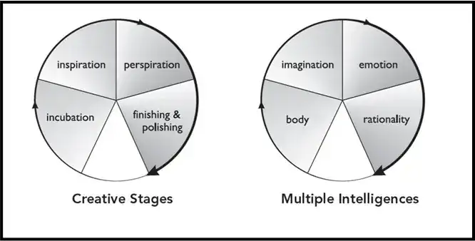

The claim
Howard Gardner's Frames of Mind (1983) argued that the mind is not one general capacity but a set of relatively independent ones: linguistic, logical-mathematical, spatial, musical, bodily-kinaesthetic, interpersonal, intrapersonal, and later naturalistic. The argument drew on evidence from prodigies, savants, brain injury and cross-cultural skill, and it was aimed partly at the narrowing effect of IQ tests.
Maps, diagrams and images


The educational claim came later and is the one that spread: that schools should identify each child's profile and teach to it. The theory itself did not specify how to do that, and Gardner has objected to the way it was turned into tests and labels.
What the evidence says
Psychometrics finds a general factor that predicts performance across dissimilar tasks, plus narrower abilities. That structure is one of the most replicated findings in psychology, and it is not what a theory of eight independent intelligences predicts. Abilities are correlated: people good at one tend to be somewhat good at others, and the correlations are not small.
The stronger problem is that the eight intelligences were not derived from data and do not generate predictions that could fail. Gardner's criteria — prodigies, savants, brain localisation, an evolutionary history — are consistent with the taxonomy, not tests of it. A framework that can accommodate any pattern of ability is not a rival to the general-factor model; it is a different kind of object.
True: abilities are uneven. A child can be musically exceptional and struggle with arithmetic.
True: teaching that uses music, movement and drawing reaches more children than a lecture does.
Not supported: that there are eight or nine separable intelligences with equal standing.
Not supported: that matching instruction to a child's strongest intelligence improves learning. That is the learning-styles claim wearing a different hat, and it has the same problem: no crossover effect.
Why the label is debunked and not fringe
Because the theory was proposed by a serious scholar in good faith, and parts of its motivation — that IQ tests measure less than a person is — are defensible. What failed is the specific structure: a list of independent faculties, presented as an alternative to the general factor, that no study has found. The archive files it here because it changed curricula for forty years on the strength of being attractive.
Sources for this page
- Wikipedia, “Theory of multiple intelligences” — the claim and its criticismen.wikipedia.org
- Wikipedia, “g factor (psychometrics)” — the structure the theory was arguing againsten.wikipedia.org
- Waterhouse (2006), Educational Psychologist — a critique of MI as a theorydoi.org
- Wikipedia, “Learning styles” — the neighbouring claim, tested and faileden.wikipedia.org
Open resources on this topic
- BookMultiple Intelligences: A Collection — ['Robin Fogarty', 'James Bellanca'] · 1998 (Internet Archive, free to read)
- BookService learning for the multiple intelligences classroom — Berman, Sally · 1999 (Internet Archive, free to read)
- BookCreating extra-ordinary teachers : multiple intelligences in the classroom and beyond — Shearer, Branton · 2008 (Internet Archive, free to read)
- PapersOpen-access articles: DOAJ · PubMed Central · Internet Archive Scholar
- BooksPublic-domain and borrowable copies: Open Library · Project Gutenberg · Google Books
Cite this page
Momin, S. (2026). Multiple Intelligences. The Larger World Archive. https://drsamonline.github.io/LARGE_GLOBE/multiple-intelligences.htmlMomin, Sohil. “Multiple Intelligences.” The Larger World Archive, 2026, https://drsamonline.github.io/LARGE_GLOBE/multiple-intelligences.html.Momin, Sohil. “Multiple Intelligences.” The Larger World Archive, 2026. https://drsamonline.github.io/LARGE_GLOBE/multiple-intelligences.html.@misc{multiple2026multiple,
author = {Momin, Sohil},
title = {Multiple Intelligences},
year = {2026},
howpublished = {The Larger World Archive},
url = {https://drsamonline.github.io/LARGE_GLOBE/multiple-intelligences.html},
note = {Last reviewed 20 November 2026}
}Last reviewed 20 November 2026 · Corrections policy · this page is not peer reviewed